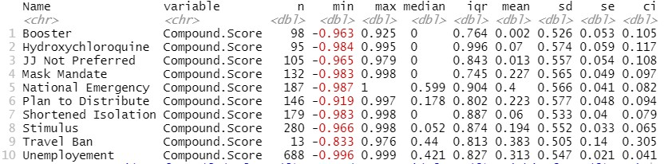
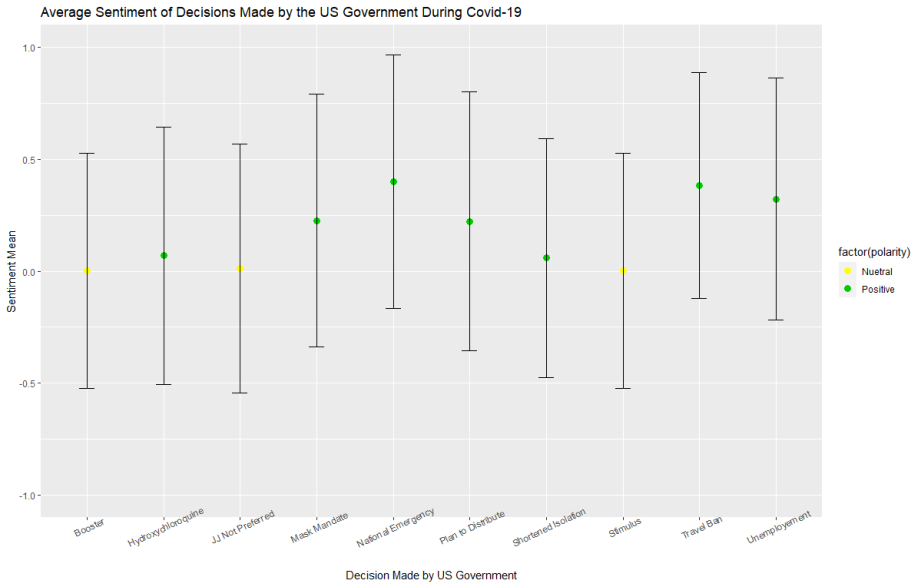
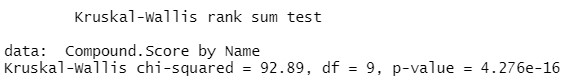
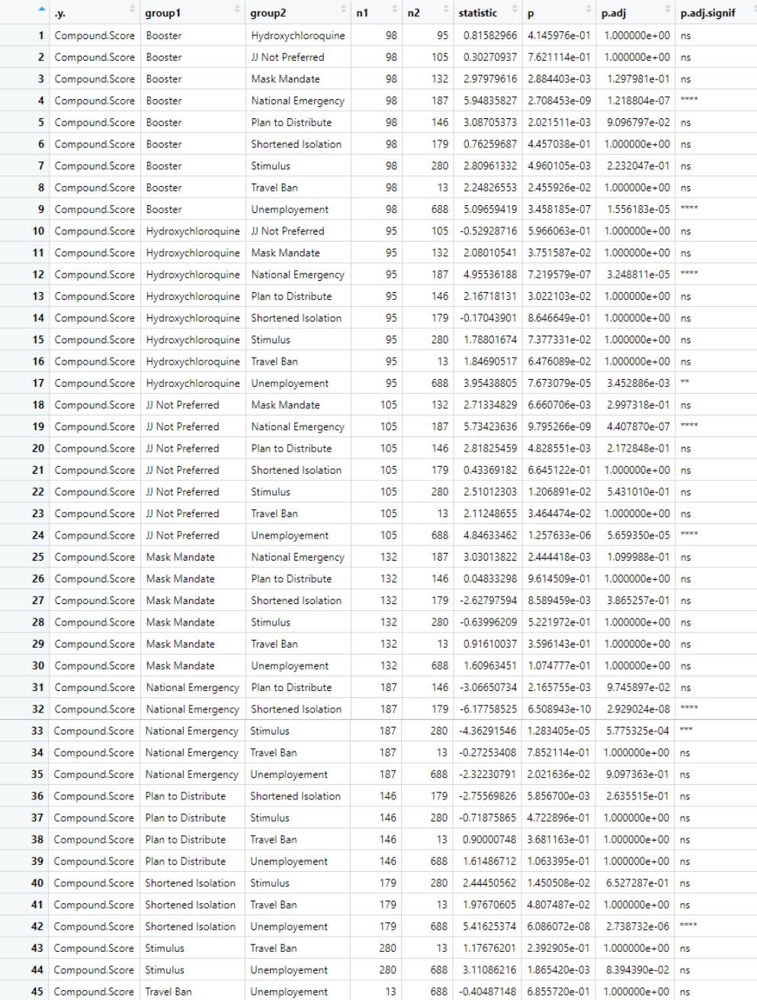

Introduction
As explained on the homepage of the website, the purpose of this project was to discern how certain decisions that were made by the United States Government affected the population's emotions. In order to accomplish this task we picked 10 important decisions that the government made and then using the dates that the decision occured, pulled post from the data that we scraped. The data was visualized in order to see if the sentiment mean was negative, neutral, or positive. Then we ran a Kruskal-Wallis Test in order to see if there was any significant difference between the means of the decisions made. Lastly, a Dunn's Test was ran in order do a pairwise comparison to find out specifically which pairs of groups were statistically significant different
Decisions Made
The following 10 decisions are listed in chronological order. More information on each decision can be found here
- Travel Ban: March 11, 2020. Trump announces he is restricting travel from Europe to the United States.
- National Emergency: March 13, 2020. Trump declares a national emergency to free up 50 billion dollars to combat the coronavirus.
- Unemployment: April 2, 2020. 6.6 million US workers file for their first week of unemployment.
- Stimulus: April 11,2020. The first round of stimulus checks arrive.
- Mask Mandate: June 10, 2020. Over half of the United States now has a mask mandate
- Hydroxychloroquine: June 10, 2020. Trails using the drug were stopped citing that the drug was unlikely to be beneficial to hospitalized patients with Covid-19
- Plan to Distribute: August 27, 2020. CDC announces plans to distribute a potential coronavirus vaccine.
- Boosters: November 19 2021. FDA authorize, CDC endorse boosters for all adults.
- JJ Not Preferred: December 16, 2021. CDC changes recommendations to make clear that moderna and pfizer vaccines are preferred over Johnson & Johnson.
- Shortened Isolation: December 27, 2021. CDC shortens isolation from 10 to 5 days if they do not have symptoms.
Null Hypothesis
There is no difference in the sentiment means of the decisions made by the United States Government during the Covid-19 pandemic.
Data
Below is the summary statistics of our data.
Below is a graph that displays the average sentiment, standard deviation, and polarity of each decision. A neutral polarity is decided by the score being betwwen -0.05 and 0.05. Anything lower is considered negative, while eveyrthing above is positive. This is in conjuction with VADER, which was used to determine the sentiment of each post.
Results and Interpretation
Below are the results from the Kurskal-Wallis test. This test was chosen because we have a continuous dependent variable in the compound scores, 10 total categorical groups of independent variables in the decisions, and an independence of observations since we only allowed a single post from each respective user. Since our data contains different n values for each decision and is not normally distributed we would need to perform this test instead of a one-way Anova. We received a p-value much smaller than 0.05 which means there was a statistically significant difference between sentiment of each decision made. This allows us to reject the null hypothesis.
Below are the results from the Dunn’s test. We used this post hoc test in order to pinpoint which specific means are significant from the others. Here we learned that there was a significant difference between the following decisions made: Booster and Hydroxychoroquine, Booster and National Emergency, Booster and Unemployment, Hydroxychloroquine and National Emergency, Hydroxychloroquine and Unemployment, JJ not Preferred And National Emergency, JJ not Preferred and Unemployment, National Emergency and Shortened Isolation, National Emergency and Stimulus, Shortened Isolation and Unemployment.
